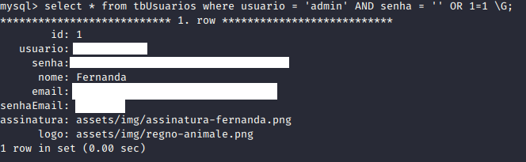
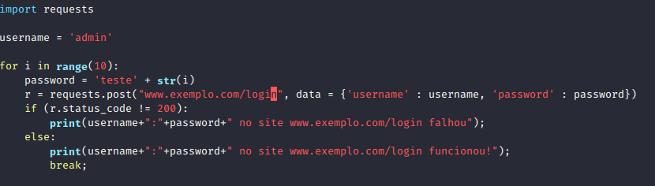
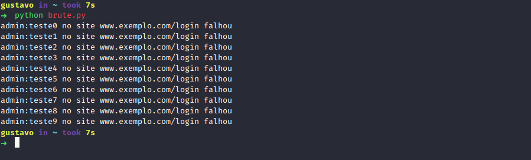

10 DE NOVEMBRO DE 2019
10 DE NOVEMBRO DE 2019
Vulnerabilidades Web Conhecidas
SQL Injection
É uma falha que ocorre quando dados não confiáveis são enviados para um intérprete como parte de um comando ou consulta. Exemplo: quando efetuamos login em um site enviados nosso login e senha para o site ele faz uma consulta no banco
de dados como essa: SELECT * FROM tbUsuarios WHERE usuario = ‘gustavo’ AND senha = ‘123’. Quando essa query é excecutada no banco de dados, retorna os dados do usuario ‘gustavo’ caso a senha dele seja ‘123’ e isso significa que esse usuario existe.
Mas se no lugar da senha a pessoa mal intencionada digitar ‘ OR 1 = 1, essa condição também vai ser aceita e o banco de dados vai retornar todos os usuarios da tabela, e o sistema vai concluir que o usuario e senha digitados são válidos e dará acesso ao sistema para o hacker.
 Exemplo de como o banco de dados interpreta uma query com sql injection
CROSS-SITE SCRIPTING (XSS)
Uma falha XSS ocorre sempre que um aplicativo inclui dados não confiáveis em uma nova página da web sem validar ou escapar adequadamente. O XSS permite que os invasores executem scripts no navegador da vítima, por sua vez, esses scripts podem redirecionar a vítima para um site malicioso ou até mesmo sequestrar sessões de usuários.
Proteção de Ataque Insuficiente
A maioria dos aplicativos não possui capacidade básica para detectar, prevenir e responder a ataques manuais e automatizados. A proteção de ataques vai muito além da validação de entrada básica e envolve a detecção, resposta e até bloqueio de tentativa de exploração.
Um exemplo é quando o programador não cria um metodo para detectar tentativas automatizadas de login e senha ao seu sistema, isso dá abertura para o hacker fazer varias tentativas até que tenha sucesso.
 Exemplo de ataque de força bruta com um script python.
Proximo artigo